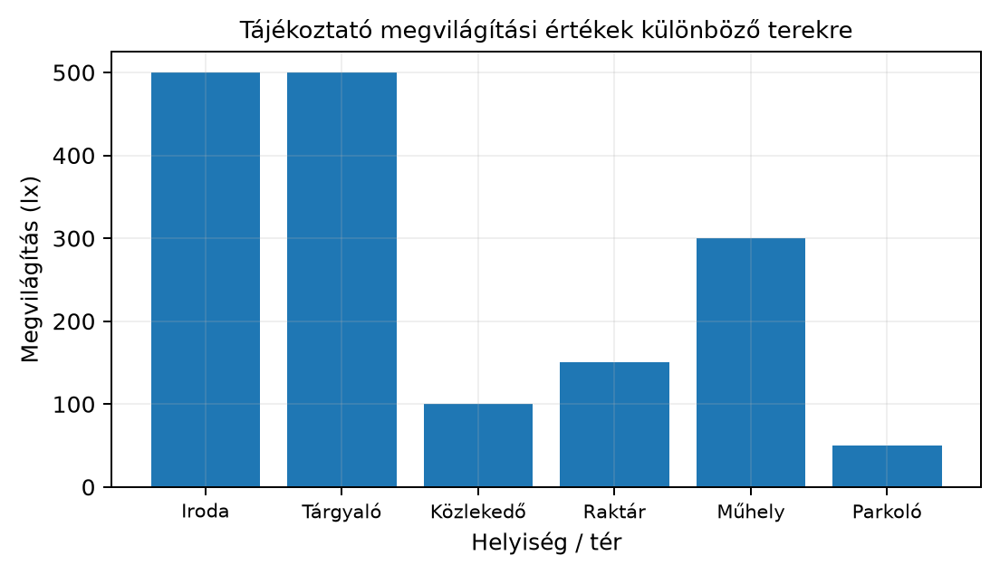
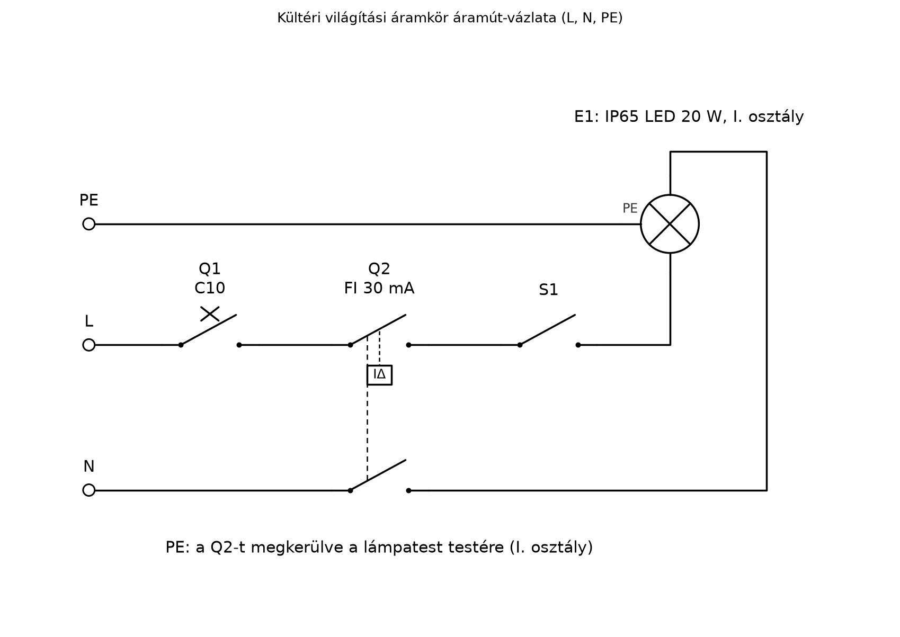

Egy lakásfelújítás vagy irodabővítés során a leggyakoribb reklamáció a világítással kapcsolatos: az egyik sarok túl sötét, a másik túl erős, a kültéri lámpa télen beázik, a kerti áramkör este folyton lecsapja a kismegszakítót. A „majd teszünk be pár lámpát” hozzáállás ritkán vezet jó eredményhez. A világítástervezés nem művészkedés: egy egyszerű, kézzel számolható módszerrel meghatározható, hány lámpatest és mekkora fényáram szükséges egy adott helyiségbe, illetve milyen védettségű és áramkörű kültéri lámpát válasszunk. Ebben az alfejezetben a mérnöki gyakorlatban is használt hasznosítási tényező módszert tanuljuk meg, és a kültéri világítás villamos követelményeit.
Képzelj el egy 6 m × 8 m-es, 2,8 m belmagasságú tanácstermet. A tulajdonos hallotta, hogy „500 lux kell az irodába”, ezért vett hat darab 4000 lumenes LED-panelt. Vajon elég lesz-e, vagy túl erős? A kérdés megválaszolásához nemcsak a fényáramot kell ismerni, hanem azt is, hogy a lámpatestek fényéből mennyi jut el a munkasíkra, és mennyire szennyeződik a lámpa az évek során. A hasznosítási tényező módszer éppen erre ad képletet.
Definíció. Hasznosítási tényező (utilance factor, UF): annak a lámpatestből kilépő fényáramnak a hányada, amely a munkasíkra (általában 0,75 m magasan vízszintes felületre) jut. Az UF értéke a lámpatest fényeloszlásától, a helyiség méreteitől, a falak és a mennyezet reflexiós tényezőitől függ. Tipikus értéke 0,3 és 0,7 között van, pontos adat a lámpatest gyártójának fotometriai adatlapjáról vehető. (ellenőrizendő: konkrét UF érték mindig a gyártói adatlapról)
Definíció. Karbantartási tényező (maintenance factor, MF): azt fejezi ki, hogy a lámpatest fényárama a szennyeződés, a lámpa öregedése és a fényforrás fényáramcsökkenése miatt idővel hányad részére csökken. Tiszta környezetben és LED-nél MF = 0,9–0,95 is lehet, poros műhelyben vagy hagyományos fénycsőnél 0,6–0,8 a jellemző. (ellenőrizendő: a tényleges MF értéket a szabvány vagy a gyártó adja meg)
Összefüggés. Átlagos megvilágítás a hasznosítási tényező módszerrel:
ahol: - a munkasík átlagos megvilágítása, mértékegysége lux (lx = lm/m²); - a lámpatestek száma (darab); - egy lámpatestből kilépő teljes fényáram (lumen, lm); - a hasznosítási tényező (dimenzió nélkül); - a karbantartási tényező (dimenzió nélkül); - a helyiség alapterülete (m²).
A szükséges lámpatestek számát ebből kifejezve:
Az eredményt mindig egész számra kell felfelé kerekíteni, és érdemes ellenőrizni, hogy a lámpatestek elhelyezése egyenletes megvilágítást ad-e.
Definíció. Helyiségindex (): a hasznosítási tényező meghatározásához szükséges geometriai jellemző:
ahol a helyiség hossza, a szélessége, pedig a lámpatest fénypontjának magassága a munkasík felett. A gyártói táblázatok és a reflexiós tényezők alapján adják meg az UF értékét.
Definíció. Lámpatest védettségi fokozata (IP-kód, MSZ EN 60529): az első számjegy a szilárd testek, a második a víz elleni védettséget jelöli. Beltéri normál környezetben IP20 elegendő; kültéri, esőtől védett helyen IP44; vizes, poros vagy talajszintű kültéri szerelésnél IP65, IP67 vagy magasabb szükséges. (ellenőrizendő: a pontos követelmény a szerelési környezet és az MSZ HD 60364 sorozat szerint)
Definíció. Érintésvédelmi osztály: I. osztályú lámpatest védővezetővel (PE), II. osztályú kettős vagy megerősített szigeteléssel (jel: két egymásba rajzolt négyzet), III. osztályú törpefeszültséggel (pl. SELV) működik. Kültéri hálózati feszültségű lámpatestnél általában I. osztályú, PE bekötéssel, vagy II. osztályú kialakítást választunk.
Szabvány. A beltéri munkahelyi világításra vonatkozó ajánlott megvilágítási értékeket az MSZ EN 12464-1 szabvány rögzíti (pl. iroda, tárgyaló, raktár, műhely). A kültéri munkahelyekre az MSZ EN 12464-2 vonatkozik. A lámpatestek védettségi fokozatát az MSZ EN 60529 (IP-kód), a villamos szerelést és a külső téri áramkörök védelmét az MSZ HD 60364 sorozat (különösen a 7. rész: különleges helyiségek) szabályozza. Az alábbi táblázatban közölt értékek tájékoztató jellegűek, a konkrét tervezésnél mindig az aktuális szabványt és a helyi előírásokat kell ellenőrizni. (ellenőrizendő: az MSZ EN 12464-1 és -2 pontos táblázatai és a jogszabályi környezet)
Megjegyzés. A világítás tárgyú szabványokban az értékek gyakran változnak (pl. LED-ek elterjedése miatt az energiahatékonysági osztályok és a karbantartási tényezők). A szerelőnek a gyártói katalógusok és az aktuális szabványok szerint kell dolgoznia.
Egy 5 m × 6 m = 30 m²-es irodába az előírás szerint 500 lx átlagos megvilágítás szükséges a munkasíkon. A kiválasztott LED-panel fényárama . A gyártó adatlapja alapján a hasznosítási tényező , a karbantartási tényezőt értékre vesszük fel. Hány lámpatest szükséges?
Számítás.
Adott: ; ; ; ; .
Keresett: .
Képlet: .
Behelyettesítés:
Eredmény: felfelé kerekítve 9 lámpatest szükséges.
Ellenőrzés: ha 9 lámpatestet szerelünk be, a tényleges átlagos megvilágítás:
ami kissé meghaladja az előírt 500 lx-t, tehát megfelelő. A 8 lámpatest csak 490 lx-t adna, ami már nem éri el az előírást.
A bevezető tanácsterem (48 m²) hat 4000 lm-es panellel, és mellett csak -t kapna; az 500 lx-hez , vagyis 12 panel kell.
Egy 12 m × 20 m = 240 m²-es raktárba 150 lx szükséges. Nagy fényáramú (csarnok-) LED-lámpatestek fényárama egyenként 12 000 lm, UF = 0,45, MF = 0,7 (poros környezet). Hány lámpatest kell?
Számítás.
Adott: ; ; ; ; .
Keresett: .
Képlet: .
Behelyettesítés:
Eredmény: felfelé kerekítve 10 lámpatest szükséges.
Ellenőrzés: a tényleges megvilágítás 10 lámpatesttel:
ami megfelel.
Ugyanaz az irodai példa, de a szerelő úgy gondolja, hogy „most még úgyis minden tiszta”, és értékkel számol. Képletében:
A 7 lámpatest újonnan, tiszta állapotban körülbelül 504 lx-t ad, ami éppen eléri az előírást. A szennyeződés miatt a fényáram azonban csökken: mellett az átlagos megvilágítás csak lx, vagyis 500 lx alatt van. Hiba: az MF elhanyagolása alulméretezéshez vezet. A helyes számítás az 1. példában látható.
Figyelem. A hasznosítási tényező módszer átlagos megvilágítást ad; az egyenletességhez a lámpatestek elrendezését is meg kell tervezni (a lámpatávolság kb. 1–1,5-szerese a lámpatestek munkasík feletti magasságának, faltól fél osztás; ellenőrizendő: gyártói ajánlás). A módszer nem alkalmas pontszerű megvilágítás (pl. munkahelyi lámpa) tervezésére.
A következő értékek tájékoztató jellegűek, a mindennapi tervezésben gyakran használt irányértékek. A pontos követelményt mindig az aktuális szabvány és a helyi előírás határozza meg. (ellenőrizendő: MSZ EN 12464-1 és -2 konkrét értékei)

Szabály. A tervezés során a megvilágítási értéket a helyiség funkciójához kell igazítani. A szabvány minimumértékeket ad meg; a szerelő feladata, hogy a lámpatestek számát és elrendezését úgy határozza meg, hogy az átlagos megvilágítás legalább ezt elérje, és lehetőleg egyenletes legyen (a maximális és minimális megvilágítás aránya ne legyen túl nagy).
Az alfejezethez tartozó interaktív ábra (a HTML-kiadásban) egy egyszerű lámpaszám-kalkulátort valósít meg. A statikus PNG-változat a következő görbét mutatja: a szükséges lámpatestek száma a lámpatest fényáramának függvényében, rögzített , , , értékek mellett. Az interaktív változatban a tanuló megváltoztathatja a megvilágítási követelményt, a helyiségméretet, a fényáramot, az UF és MF értékeket, és azonnal látja a szükséges lámpaszámot.
A kültéri világítás (kert, parkoló, bejárat, homlokzat) villamos szempontból több különbséget mutat a beltérihez képest: a nedvesség, a por, az UV-sugárzás, a szélsőséges hőmérséklet és a mechanikai behatások (pl. labda, szerszám) miatt a lámpatesteknek és az áramköröknek fokozott védettséggel kell rendelkezniük.
A kültéri lámpatest kiválasztásánál az IP-kód második számjegye (vízvédelem) a döntő. Az MSZ HD 60364 szerint a külső téri szerelésnél általában a következő irányértékek érvényesek: (ellenőrizendő: a pontos besorolás a szerelési környezettől függ)
Szabály. A kültéri lámpatest IP védettségét a tényleges környezeti hatások alapján kell megválasztani. A legjobb, ha a lámpatest gyártója kifejezetten „kültéri” kivitelként jelöli, és a szerelési utasításban megadja a megengedett szerelési pozíciót. A csatlakozó dobozok, kábelek és kötések védettsége is legalább akkora legyen, mint a lámpatesté. (ellenőrizendő: a vonatkozó IP-követelmények a szabványban)
A kültéri világítási áramköröket a beltériektől általában külön áramkörön kell szerelni, hogy a kültéri hiba ne tegye sötétté a belső tereket, és a védelmeket szelektíven lehessen méretezni. A tipikus kialakítás:
Gyakorlati példa (rajzban). Az alábbi egy egyszerű kültéri világítási áramkör áramút-vázlata (a kapcsolási rajzot a Világítási áramkörök: egypólusú, soros, váltó és kereszt alfejezetben ismertettük):

A rajz azt szemlélteti, hogy a fázis (L) sorban a Q1 kismegszakítón, a Q2 FI-relén és az S1 kapcsolón át jut a lámpatestre. A nulla (N) is átmegy a kétpólusú FI-relén (különben a FI nem a teljes áramot mérné), a kapcsoló viszont csak a fázist szakítja meg. A védővezető (PE) a FI-t megkerülve, közvetlenül a lámpatest testéig megy; az I. osztályú lámpatest PE csatlakozóját kötelező bekötni.
A kültéri világítás energiaigénye a lámpatestek összesített teljesítményéből és a napi üzemidőből adódik.
Összefüggés. Energiafogyasztás:
ahol az elfogyasztott villamos energia (kWh), a lámpatestek összteljesítménye (kW), pedig az üzemidő (óra). Ha például hat darab 20 W-os LED-lámpát (összesen 0,12 kW) napi 4 órában üzemeltetünk, akkor a napi energiafogyasztás:
Egy hónap (30 nap) alatt ez mintegy 14,4 kWh, ami LED-eknél nagyon szerény költség. A villamos teljesítmény felvételét a lámpatest adattábláján vagy a gyártói adatlapon tüntetik fel; a tervezéskor az összes lámpatest egyidejű üzemével számoljunk.
A kültéri világítás vezérlése történhet: - hagyományos kapcsolóval (IP44-es vagy jobb kivitel), jellemzően a belső térből; - mozgásérzékelővel (PIR), amely a sötétben érzékelt mozgásra kapcsolja fel a lámpát. Az érzékelő beépített szürkületkapcsolóval is rendelkezhet, hogy csak sötétben működjön; - időkapcsolóval (programozható kapcsolóóra, csillagászati óra), amely meghatározott időszakokban kapcsol; - fényérzékelővel (szürkületkapcsolóval), amely a természetes fényerőhöz igazodva kapcsol.
A modern rendszerekben a kültéri világítás beépíthető az épületautomatikába (pl. KNX), de ez már túlmutat ezen az alfejezeten (lásd: KNX, DALI és más épületautomatikai rendszerek).
Gyakorlati megjegyzés. A vezérlő eszközöket is a kültéri környezetnek megfelelő védettséggel kell szerelni, vagy védett helyre (pl. fedett előtér, időjárásálló doboz) helyezni. A mozgásérzékelő látószögét úgy kell beállítani, hogy ne jelezzen folyamatosan a járdán elhaladó járókelőkre, hanem csak a saját területre.
Egy családi ház kertvilágításának bővítésekor a kivitelező IP44-es falikarokat szerelt fel, és az áramkörre nem tett FI-relét. A lámpatesteket közvetlenül a házfalra, az eresz alá szerelte, ezért kezdetben nem volt gond. Fél év múlva azonban az egyik lámpatest csatlakozódoboza beázott, a zöld-sárga védővezető és a fázis között nedvesség okozta szivárgás lépett fel; a beázás oka a rosszul tömített kábelbevezetés és csatlakozódoboz volt. Mivel FI-relé nem volt, a néhány tíz–száz mA-es szivárgóáramot semmi nem kapcsolta le: a kötés tovább melegedett és korrodált, és ha a PE-kötés is meglazul, a fémház tartósan feszültség alá kerül, amit csak egy 30 mA-es FI kapcsolna le. A szerelő az érintésvédelmi felülvizsgálat során mérte ki a hibát, és utólag 30 mA-es FI-relét szerelt be, valamint a kábelbevezetéseket és a dobozt újratömítette, a lámpatesteket pedig kültérre minősített, IP65-ös kivitelre cserélte. Tanulság: kültéri áramkörhöz mindig FI-relé és a környezetnek megfelelő IP védettségű lámpatest szükséges. A hálózati feszültségű munkát csak jogosult személy végezheti; a hiba kijavítása előtt feszültségmentesítés szükséges az öt biztonsági szabály szerint.
A karbantartási tényező elhanyagolása. A szerelő csak a kezdeti fényárammal számol, és idővel a megvilágítás az előírt szint alá süllyed. Helyes gyakorlat: mindig a reális MF értékkel számoljunk.
Rossz IP védettségű lámpatest kültérre. Beltéri (pl. IP20-as) lámpatest esőnek kitett helyre szerelése, vagy a kábelbevezetés tömítetlensége beázáshoz, korrózióhoz és érintésveszélyhez vezet. Helyes gyakorlat: a gyártó által kültérre minősített kivitel (ellenőrizendő: MSZ HD 60364-7-714); a minimumnál jobb (IP65) védettség ott indokolt, ahol vízsugár, lemosás vagy hó éri; talajba süllyesztve IP67, víz alá IP68.
A FI-relé elhagyása kültéri áramkörnél. A kültéri szerelvények fokozott érintésveszélyt jelentenek; FI-relé nélkül a hibaáram nem old le. Helyes gyakorlat: 30 mA-es FI-relét minden kültéri áramkörbe be kell építeni, majd működését tesztelni kell.
A feszültségesés figyelmen kívül hagyása hosszú kültéri vezetéknél. A kert végére hosszú kábelt fektetnek, és a lámpa fényereje már a vezeték végen észrevehetően csökken. Helyes gyakorlat: a vezetékméretezésnél a feszültségesést is ellenőrizni kell (lásd a Feszültségesés és a vezeték méretezése alfejezetben).
A lámpatest védővezetőjének elhagyása. I. osztályú (fémházas) lámpatest sorkapcsában a PE bekötését elmulasztják, így hiba esetén a fémház veszélyes feszültségre kerülhet. Helyes gyakorlat: mindig bekötni a PE-t, és folytonosságát megmérni.
1. kérdés (igaz/hamis). A hasznosítási tényező (UF) a lámpatest hatásfoka (a lámpatestből kilépő és a fényforrás fényáramának hányadosa).
2. kérdés (gyors számolás). Egy 20 m²-es helyiségbe 300 lx szükséges. A lámpatest fényárama 2500 lm, UF = 0,5, MF = 0,8. Hány lámpatest szükséges?
3. kérdés (gyakorlati). Milyen IP védettséget választanál egy kültéri, közvetlen esőnek kitett fali lámpához? Indokold!
4. kérdés (rajzolvasás). Az egyvonalas rajzon egy kapcsoló előtt van a FI-relé és a kismegszakító. Melyik készüléknek mi a szerepe, és mi a helyes sorrend?
5. kérdés (számítási hiba keresése). Egy szerelő egy 100 m²-es műhelyt 500 lx-re tervez, lámpatest 8000 lm, UF = 0,4, MF = 0,7. Képlete: n = (500·100) / (8000·0,4) = 15,6 → 16 db. Mi a hiba?
6. kérdés (rövid indoklás). Miért kell kültéri áramkörbe 30 mA-es FI-relét szerelni?
1. feladat (A). Egy öltöző 4 m × 5 m, az előírt átlagos megvilágítás 100 lx. A lámpatest fényárama 2400 lm, UF = 0,45, MF = 0,8. Hány lámpatest kell?
2. feladat (A). Sorold fel az IP-kód első és második számjegyének jelentését, és adj példát IP44, IP65, IP67 védettségű lámpatestek használati helyére!
3. feladat (B). Egy tárgyaló 8 m × 10 m, 500 lx szükséges (MSZ EN 12464-1, tárgyaló: írás, olvasás; ellenőrizendő a hatályos kiadás táblázata). Két jelölt lámpatest van: A típus: 4200 lm, UF = 0,55; B típus: 6000 lm, UF = 0,48. Mindkettőhöz MF = 0,85. Melyik típusból hány darab kell, és melyik a gazdaságosabb, ha az A ára 12 000 Ft/db, a B ára 18 000 Ft/db?
4. feladat (B). Egy kültéri parkolóvilágításhoz 10 db 30 W-os LED-lámpatestet szerelnek, IP65-ös kivitelben. A lámpatestek egy egyfázisú 230 V-os áramkörre kerülnek, a kismegszakító C10 A-es. Az áramkör hossza a legtávolabbi lámpáig 80 m, réz vezeték, keresztmetszet 2,5 mm². Ellenőrizd, hogy a feszültségesés a megengedett 3%-on belül van-e! (Réz fajlagos ellenállása ; a feszültségesés képlete egyfázisú körben: , itt .)
5. feladat (C). Egy 200 m²-es üzemcsarnokba 500 lx szükséges. A rendelkezésre álló lámpatestek: 12 000 lm, UF = 0,4, MF = 0,7. A lámpatestek ára 25 000 Ft/db, a szerelési költség 5 000 Ft/db. Az energiaár 50 Ft/kWh. A lámpatestek teljesítménye 100 W/db. Hány lámpatest kell, és mennyi lesz az éves energiafogyasztása, ha napi 10 órában, évi 250 munkanapon üzemel?
6. feladat (D). Egy kültéri lépcsővilágítást építesz: 5 db 12 V-os, 5 W-os LED-lámpatestet szeretnél, az MSZ HD 60364 szerint törpefeszültségű (SELV) táplálással. A lámpatestek IP67 védettségűek, III. érintésvédelmi osztályúak (SELV-ről működnek), és műanyag házasak. Rajzold fel az áramkör blokkvázlatát, és válaszd ki a szükséges tápegységet (AC/DC LED-tápegység, állandó feszültségű, 12 V, legalább 30 W). Ismertesd, miért nem kell FI-relé a törpefeszültségű oldalon, és miért kell a hálózati oldalon FI-relé és kismegszakító!
Önellenőrzés – válaszok
1. Hamis. A hasznosítási tényező a munkasíkra jutó és a lámpatestből kilépő fényáram hányadosa (). A lámpatest hatásfoka (LOR) a lámpatestből kilépő és a fényforrás fényáramának hányadosa; a fényáram és a villamos teljesítmény hányadosa pedig a fényhasznosítás (lm/W). Egyik sem azonos az UF-fel.
2. n = (300·20) / (2500·0,5·0,8) = 6000 / 1000 = 6. Tehát 6 db lámpatest.
3. Esőnek kitett falikarhoz legalább a gyártó által kültérre minősített, IPX4 (fröccsenő víz ellen védett) kivitel kell; ha vízsugár, lemosás vagy hó is érheti, IP65 (a második számjegy 5-ös értéke vízsugár elleni védelmet, az első 6-os a por elleni teljes védelmet jelent) (ellenőrizendő: MSZ HD 60364-7-714).
4. A kismegszakító a túláram (zárlat, túlterhelés) ellen véd, a FI-relé a hibaáram ellen. A lakáselosztóban jellemzően a FI egy csoport elején áll, mögötte a csoport kismegszakítói (Lakás- és épületelosztó felépítése); egy önálló kültéri körnél kombinált FI/kismegszakító (MSZ EN 61009-1) is alkalmazható. Mindkét esetben a FI-t a gyártó által megadott túláramvédelem védi zárlat ellen (ellenőrizendő: gyártói koordinációs adat). Nincs egyetlen „helyes” sorrend: az alfejezet kültéri áramkörének rajzán a Q1 kismegszakító a Q2 FI előtt áll, és ez is szabályos, ha a kismegszakító a FI-t a gyártói koordináció szerint védi zárlat és túlterhelés ellen; a lakáselosztóban a FI csoportonként elöl áll. A lényeg: a kapcsoló a védelmek után van, és a FI-t túláramvédelem védi.
5. A karbantartási tényezőt (MF = 0,7) elfelejtette a nevezőbe írni. A helyes n = (500·100)/(8000·0,4·0,7) = 50000/2240 ≈ 22,3 → 23 db.
6. Kültéren nagyobb az érintésveszély (nedvesség, csupasz talaj, fémház). A 30 mA-es FI-relé olyan hibaáramnál lekapcsol, amely már veszélyes lehet az emberre, így megelőzi az áramütést.
Feladatok – megoldások
1. feladat (A). Adott: A = 20 m², E = 100 lx, Φ = 2400 lm, UF = 0,45, MF = 0,8. Képlet: n = (E·A)/(Φ·UF·MF). n = (100·20)/(2400·0,45·0,8) = 2000/864 ≈ 2,31 → felfelé kerekítve 3 db lámpatest. Ellenőrzés: 3 db-bal E = (3·2400·0,45·0,8)/20 = 2592/20 = 129,6 lx, ami meghaladja a 100 lx-t.
2. feladat (A). IP-kód: első számjegy: 0–6 szilárd testek elleni védelem (pl. 6 = porálló); második: 0–8 víz elleni védelem (pl. 4 = fröccsenő víz, 5 = vízsugár, 7 = időszakos vízbe merítés). Példák: IP44 – fedett terasz, eresz alatti vagy esőnek kitett falikar (kültérre minősített kivitel); IP65 – lemosásnak, vízsugárnak, hónak kitett lámpatest (pl. homlokzat alsó része, parkoló); IP67 – talajba süllyesztett, vizes környezet.
3. feladat (B). A típus: n_A = (500·80)/(4200·0,55·0,85) = 40000/1963,5 ≈ 20,4 → 21 db. B típus: n_B = (500·80)/(6000·0,48·0,85) = 40000/2448 ≈ 16,3 → 17 db. Költség A: 21·12000 = 252 000 Ft; B: 17·18000 = 306 000 Ft. Az A típus olcsóbb, bár több darab kell belőle.
4. feladat (B). A teljesítmény: P = 10·30 W = 300 W. Áram: I = P/U = 300/230 ≈ 1,30 A. Vezeték hossza a legtávolabbi lámpáig: l = 80 m (oda-vissza: 2·l = 160 m). Ellenállás: R = ρ·(2l)/A = 0,0178·160/2,5 = 0,0178·64 = 1,139 Ω. Feszültségesés: ΔU = I·R = 1,30·1,139 ≈ 1,48 V. Százalékban: 1,48/230·100 ≈ 0,64 %, ami jóval a 3 % alatt van. (Megjegyzés: a képlet egyszerűsítve, a cosφ=1 miatt pontos.)
5. feladat (C). Lámpaszám: n = (500·200)/(12000·0,4·0,7) = 100000/3360 ≈ 29,76 → 30 db. Összes bekerülési költség: 30·(25000+5000) = 900 000 Ft. Éves energiafogyasztás: P_össz = 30·100 W = 3 kW. Napi 10 h, évi 250 nap → t = 2500 h. Energia: W = 3 kW·2500 h = 7500 kWh. Költség: 7500·50 = 375 000 Ft/év. (Az energiaár csak példa, a valós érték változhat.)
6. feladat (D). Blokkvázlat: hálózati betáplálás → kismegszakító (C6 A) → FI-relé (30 mA) → LED-tápegység (AC/DC, 230 V/12 V, 30 W vagy nagyobb) → törpefeszültségű kábel (keresztmetszet a hosszból és a 12 V-on megengedett feszültségesésből számolandó, az áram ) → 5 db párhuzamosan kapcsolt 12 V/5 W LED (összesen 25 W). A lámpatestek III. osztályúak, a SELV-kör nem földelhető, ezért nincs védővezető a kimeneti oldalon. A törpefeszültségű oldalon 12 V alacsony, érintése biztonságos (SELV áramkör), ezért ott nincs szükség FI-relére; a védelem a tápegységben biztosított (a hálózat és a kimenet galvanikus elválasztása). A hálózati oldalon viszont kötelező a kismegszakító (túláram) és a FI-relé (hibaáram), mert a tápegység csatlakozó oldala 230 V-os, és a törpefeszültségű oldal biztonsága a tápegység épségétől függ. Ha a tápegység meghibásodik, a hálózati oldal FI-reléje véd. A biztonsági korlát itt is érvényes: hálózati feszültségű munkát csak jogosult végezhet, feszültségmentesítés után.
A világítástervezés gyakorlati eszköze a hasznosítási tényező módszer, amely az átlagos megvilágítást a lámpatestek számából, a fényáramból, a hasznosítási tényezőből (UF) és a karbantartási tényezőből (MF) számítja: . A szükséges lámpaszámot ebből fejezzük ki, majd felfelé kerekítünk. A megvilágítási követelményeket az MSZ EN 12464-1 és -2 szabványok adják meg; az értékek ellenőrizendők. Kültéri világítás esetén a lámpatest IP-védettségét a környezet határozza meg (esőnek kitett helyen a gyártó által kültérre minősített kivitel kell, vízsugárnak vagy lemosásnak kitett helyen IP65; ellenőrizendő: MSZ HD 60364-7-714). A kültéri áramkörbe kismegszakító és 30 mA-es FI-relé kötelező, a vezetékeket a feszültségesésre is méretezni kell. A lámpatest védelmi osztálya (I., II., III.) meghatározza a védővezető bekötésének szükségességét. Továbbvitt eredmény. A hasznosítási tényező módszer és a megvilágítási követelmények ismerete közvetlenül hasznosul a Biztonsági világítás méretezésében, valamint az Érzékelők: fény, mozgás, jelenlét, hőmérséklet alfejezetben, ahol a vezérlés világítási paramétereit is figyelembe vesszük.